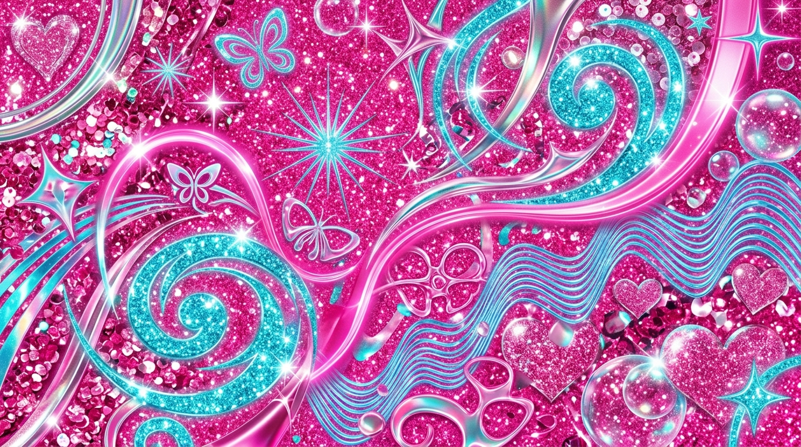

Meu primeiro post
Oioii!! Me chamo Tulipa e eu sou a escritora desse blog. Ele é feito para ser como um diário - que, pasmém, não é escrito diariamente - cheio de desabafos, experiências, reflexões e perguntas. Sejam bem-vindos à miniatura da minha mente que esse blog é!! :3
Por Tulipa